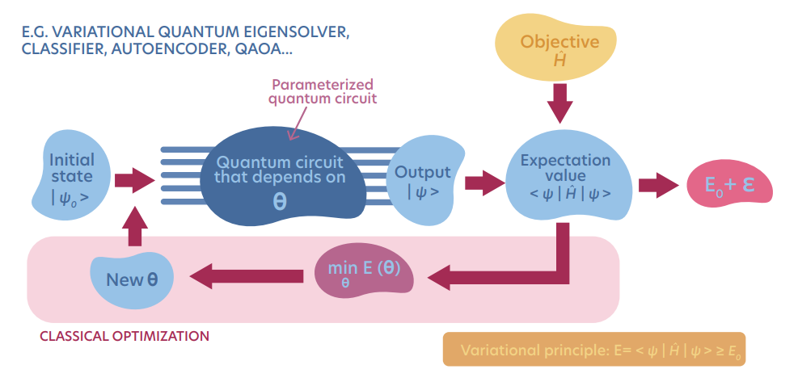
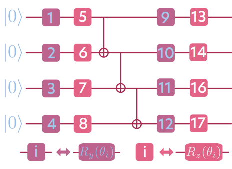

import torch as pt
from torch import matrix_exp as expm
from torch.linalg import eigh as eighVariational Quantum Eigensolver (VQE) from scratch
1 Finding ground state energy on NISQ devices
Finding a ground state energy of a quantum many-body system is one of the main objectives of quantum physics. However, the exact diagonalization method fails due to the exponential increase of the Hilbert space with the number of particles. One possible way to overcome such a numerical restriction is to use Variational Quantum Eigensolver (VQE) on Near-Intermediate-Scale-Quantum (NISQ) devices.
The VQE is a variational method for finding a ground state in the quantum many-body system on quantum computers with the help of automatic differentiation. It was first proposed in A. Peruzzo, et. al. A variational eigenvalue solver on a photonic quantum processor. The idea behind the VQE is to implement a many-body wave-function ansatz as a parametrized quantum circuit. Next, the variational parameters optimization is prepared as a minimization of an expectation value of the considered Hamiltonian. For more details, see our book Modern applications of machine learning in quantum sciences p. 220. The schematic VQE protocol you can find below:

Let’s implement a simple Variational Quantum Eigensolver for system containing \(L=4\) spins-1/2 from scratch, using PyTorch automatic differentiation. Let us consider \(1D\) Hamiltonian:
\[\begin{equation} \hat{H} = \sum_{i}\sum_{\tau = x,y,z} J_\tau\hat{\sigma}^\tau_i\hat{\sigma}^\tau_{i+1} + \sum_i\sum_{\tau = x,y,z}h^\tau \hat{\sigma}^{\tau}_i, \end{equation}\] where \(J_\tau\) and \(h_\tau\) are Hamiltonian’s parameters, and \(\tau = x,y,z\).
Next, we have propose an ansatz in the form of a quantum circuit, schematically depicted on the figure below: 
The above pictorial representation of the ansatz we denote as \(|\psi(\vec{\theta})\rangle\). Our ansatz contains \(3\) CNOT gates, and depends on \(16\) angles \(\theta_i\), \(i \in (1,\dots,16)\) which parametrize the rotational gates defined as \[\begin{equation} \begin{split} R_y(\theta_i) & = e^{-i\theta_i \hat{\sigma}^y_i} \\ R_z(\theta_i) & = e^{-i\theta_i \hat{\sigma}^z_i}, \end{split} \end{equation}\] where \(\hat{\sigma}^{\tau}\) are Pauli operators defined on a spin chain, i.e. \[\begin{equation} \hat{\sigma}^{\tau}_i = \mathbb{1}^{i-1}\otimes\hat{\sigma}^\tau\otimes\mathbb{1}^{N-i}. \end{equation}\] Here, the \(\mathbb{1}\) is a \(2\times2\) identity matrix, and \(\hat{\sigma}^{\tau}\) are standard \(2\times2\) Pauli matrices.
To find a ground state energy, or more precisiley, a set of parameters for which the expectation value of the Hamiltonian is smallest, we will minimize the energy of the system \[\begin{equation} E(\vec{\theta}) = \langle \psi(\vec{\theta})|\hat{H}|\psi(\vec{\theta})\rangle \end{equation}\] via optimizing parameters \(\vec{\theta}\). Optimization will be done via one of the optimization algorithms, such as SGD or Adam.
2 Implementation:
Let’s import all necessary libraries:
Now, we implement spin-chain Pauli operators, rotational gates, and CNOT gates:
def get_Identity(k): # returns k-tensor product of the identity operator, ie. Id^k
Id = id_local
for i in range(0, k-1):
Id = pt.kron(Id, id_local)
return Id
def get_string_operator(A, L, i):
Op = A
if(i == 1):
Op = pt.kron(A,get_Identity(L-1))
return Op
if(i == L):
Op = pt.kron(get_Identity(L-1),A)
return Op
if(i>0 and i<L):
Op = pt.kron(get_Identity(i-1), pt.kron(Op, get_Identity(L-i)))
return Op
def Rx(theta, j):
return expm(-1j*theta*sigma_x[j])
def Ry(theta, j):
return expm(-1j*theta*sigma_y[j])
def Rz(theta, j):
return expm(-1j*theta*sigma_z[j])
def CNOT(i,j):
return expm(pt.pi/4*(Id - sigma_z[i])@(Id - sigma_x[j])*1j)Now, let’s define system size and prepare necessary operators:
L = 6 # Number of spins
D = 2**L # Size of the Hilbert space
# Pauli operators
id_local = pt.tensor([[1.,0],[0,1.]])
sigma_x_local = pt.tensor([[0,1.],[1.,0]])
sigma_y_local = 1j*pt.tensor([[0,-1.],[1.,0]])
sigma_z_local = pt.tensor([[1.,0],[0,-1.]])
# Operators acting on j-th spin in spin chain
Id = get_string_operator(id_local, L, 1)
sigma_x = {}
sigma_y = {}
sigma_z = {}
for j in range(1,L+1):
sigma_x[j] = get_string_operator(sigma_x_local, L, j)
sigma_y[j] = get_string_operator(sigma_y_local, L, j)
sigma_z[j] = get_string_operator(sigma_z_local, L, j)Now, let us define our Hamiltonian and calculate its ground state energy with numerical diagonalization:
# Hamiltonian parameters
J = {"x": 1.,
"y": 1.,
"z": -1.}
h = {"x": 1.,
"y": 1.5,
"z": 3.}
H = pt.zeros((D,D))
for i in range(1,L):
H = H + J["x"]*sigma_x[i]@sigma_x[i+1] + J["y"]*sigma_y[i]@sigma_y[i+1] + J["z"]*sigma_z[i]@sigma_z[i+1]
for i in range(1,L+1):
H = H + h["x"]*sigma_x[i] + h["y"]*sigma_y[i] + h["z"]*sigma_z[i]
E, P = eigh(H)
E_GS = E[0]
print('Exact ground state energy E_{GS} = ' + "{:2.2f}".format(E_GS))Exact ground state energy E_{GS} = -24.58We define our ansatz for the Hamiltonian ground state:
def psi_ansatz(theta):
psi_re = pt.zeros(D)
psi_im = pt.zeros(D)
psi_re[D-1] = 1 # In computational basis this vector
# corresponds to all spins down
psi_tmp = pt.complex(psi_re,psi_im)
psi_tmp = Ry(theta[0],1)@psi_tmp
psi_tmp = Ry(theta[1],2)@psi_tmp
psi_tmp = Ry(theta[2],3)@psi_tmp
psi_tmp = Ry(theta[3],4)@psi_tmp
psi_tmp = Rz(theta[4],1)@psi_tmp
psi_tmp = Rz(theta[5],2)@psi_tmp
psi_tmp = Rz(theta[6],3)@psi_tmp
psi_tmp = Rz(theta[7],4)@psi_tmp
psi_tmp = CNOT(1,2)@psi_tmp
psi_tmp = CNOT(2,3)@psi_tmp
psi_tmp = CNOT(3,4)@psi_tmp
psi_tmp = Rz(theta[8],1)@psi_tmp
psi_tmp = Rz(theta[9],2)@psi_tmp
psi_tmp = Rz(theta[10],3)@psi_tmp
psi_tmp = Rz(theta[11],4)@psi_tmp
psi_tmp = Ry(theta[12],1)@psi_tmp
psi_tmp = Ry(theta[13],2)@psi_tmp
psi_tmp = Ry(theta[14],3)@psi_tmp
psi_tmp = Ry(theta[15],4)@psi_tmp
psi_tmp = CNOT(1,2)@psi_tmp
psi_tmp = CNOT(2,3)@psi_tmp
psi_tmp = CNOT(3,4)@psi_tmp
return psi_tmpFinally, we define our loss function as the expecation value of the Hamiltonian - function which we will minimize with the help of automatic differentiation, and optimization algorithms.
def get_E(theta):
psi_tmp = psi_ansatz(theta)
E = pt.vdot(psi_tmp, H@psi_tmp)
return EIn the last step, we initialize initial values of the theta as a torch tensor with trainable entries, and iteratively find optimal parameters \(\vec{\theta}\):
theta = pt.zeros(16,requires_grad=True)
optimizer = pt.optim.Adam([theta],lr = 1e-1)
E_variational_vs_epochs = []
for i in range(0,200):
loss = get_E(theta)
optimizer.zero_grad()
loss.backward()
optimizer.step()
E_variational_vs_epochs.append(get_E(theta).item().real)
print("Exact diagonalization provides E_GS = " + "{:2.2f}".format(E_GS))
print("VQE provides E_GS = " + "{:2.2f}".format(E_variational_vs_epochs[-1]))Exact diagonalization provides E_GS = -24.58
VQE provides E_GS = -24.05As we can see, a very simple ansatz for VQE provides a quite ground state accurate energy, close to value obtained via the Exact Diagonalization method.